This update adds the newest vegetable, fruit, berry, arbor, and pollinator photographs. Each image is labeled with the crop shown so names and descriptions stay matched.
Vegetables
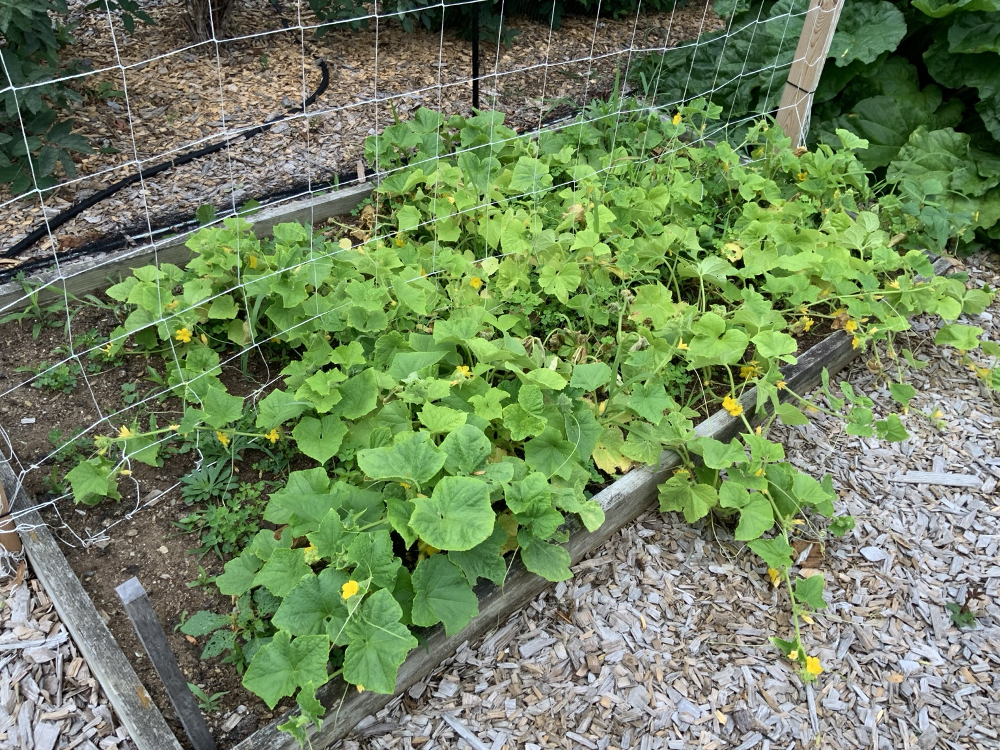
Pickling cucumbers spreading across the raised bed with many blossoms.
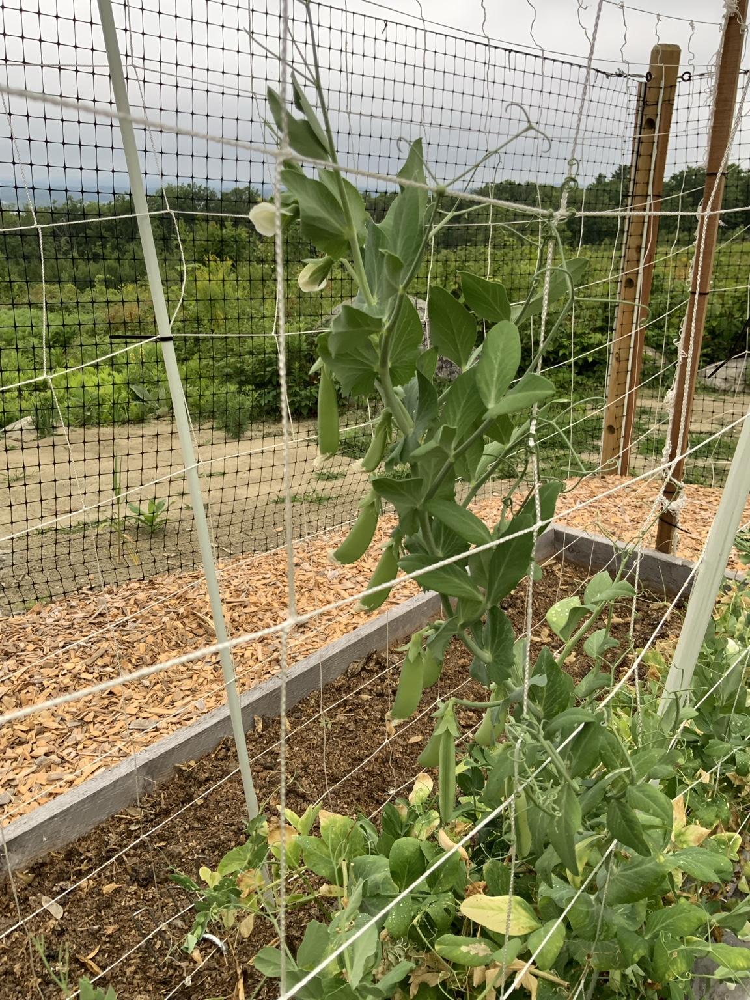
Alderman peas with filled pods and continued bloom.
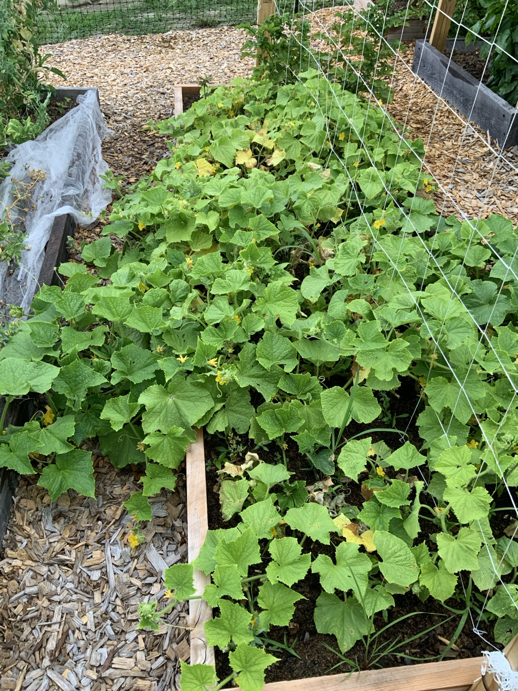
Straight Eight cucumbers at peak summer growth.
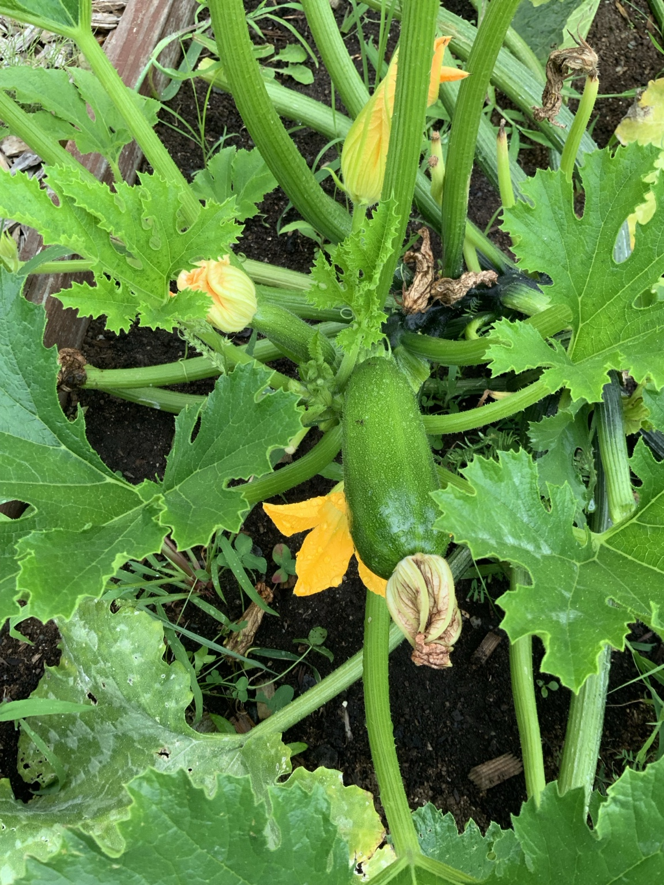
Summer squash developing after successful pollination.
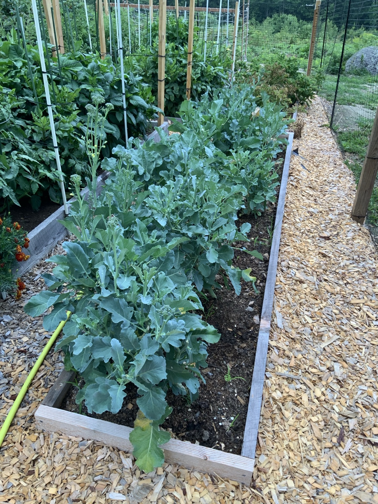
Broccoli plants producing side shoots.
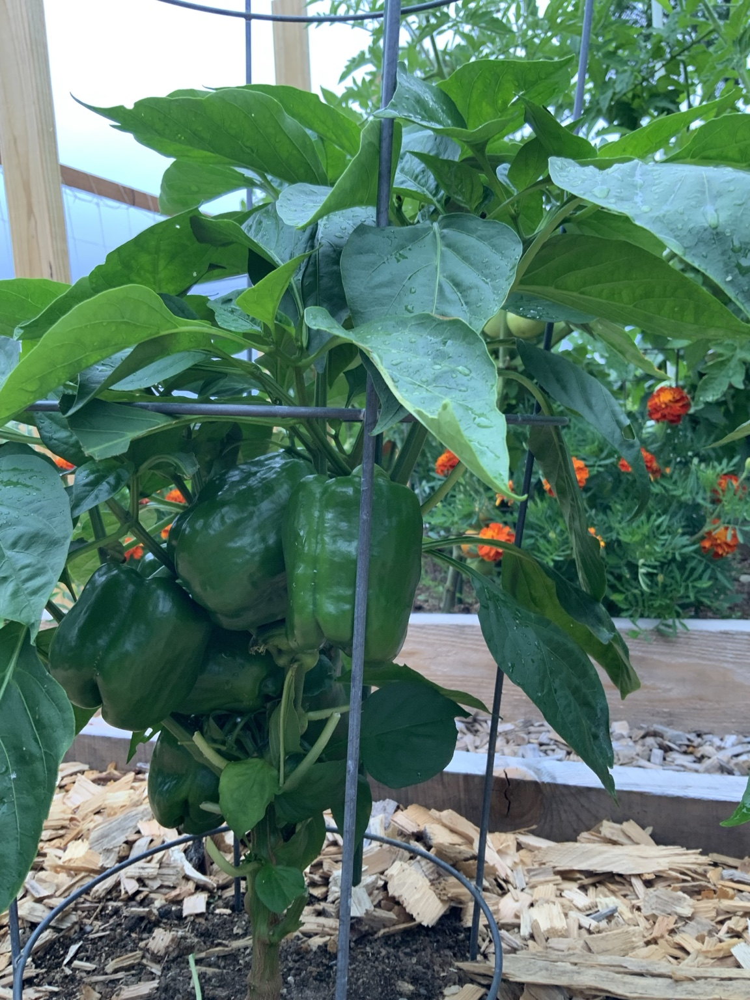
King of the North peppers carrying a heavy crop.
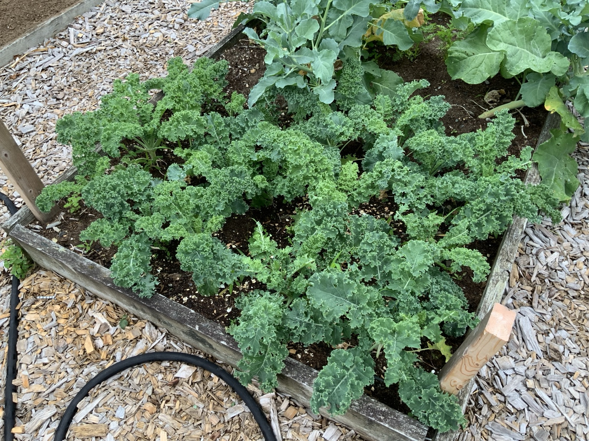
Healthy curly kale in the raised bed.
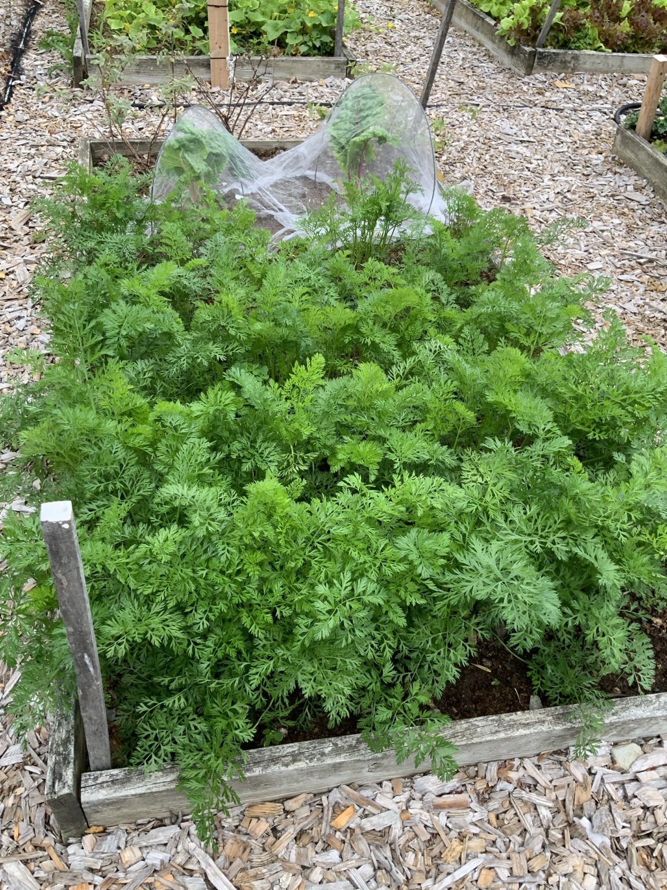
Bangor carrots with vigorous tops.
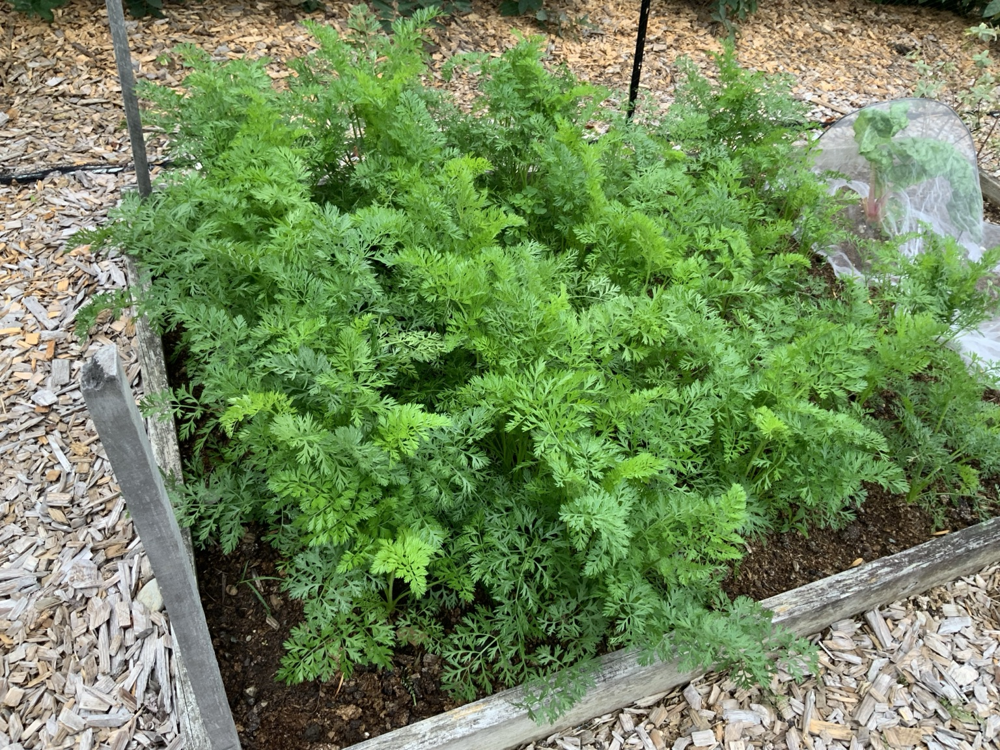
Yaya carrots filling the bed with dense foliage.
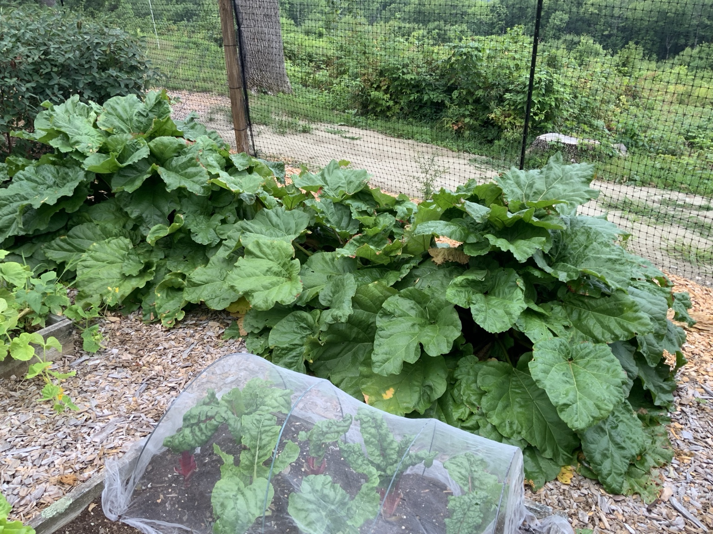
Mature rhubarb patch rebuilding strength after harvest.
Fruit, berries, and arbor
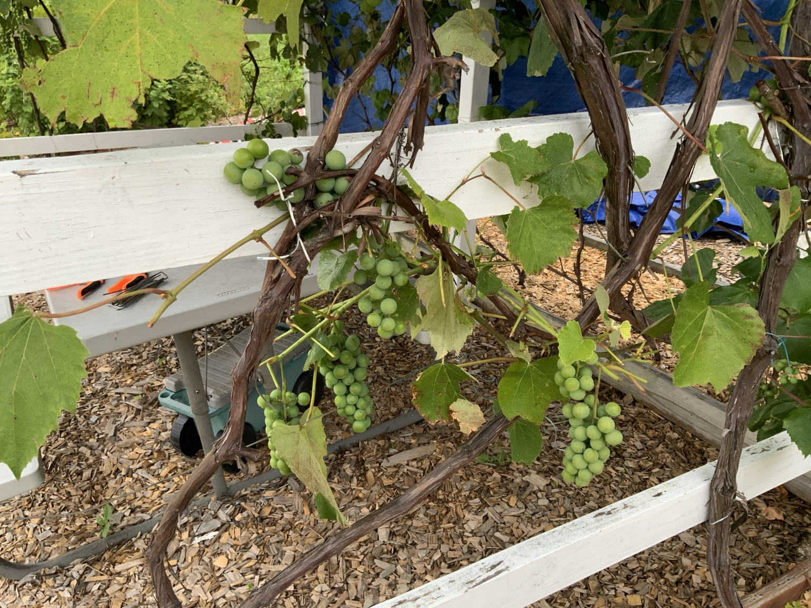
Grape clusters developing across the arbor.
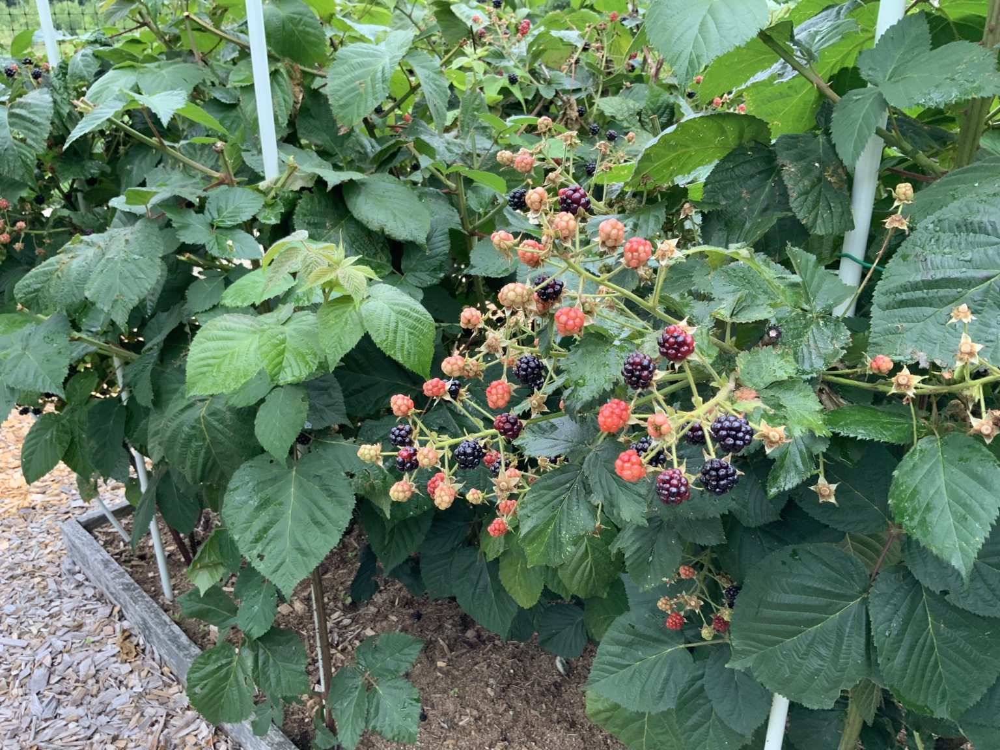
Blackberries ripening in several stages at once.
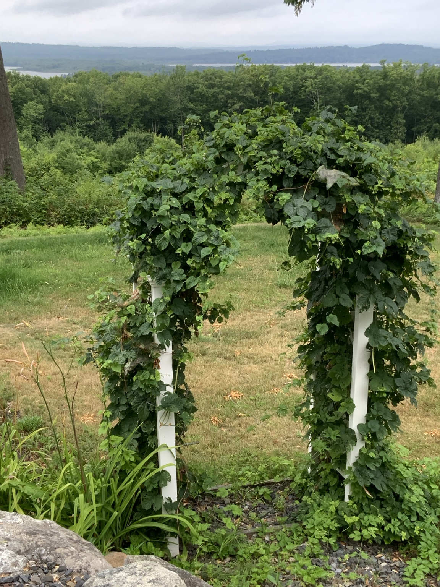
Hops covering the white arbor above the scenic garden view.
Garden friends · Pollinators
These photographs show why flowering crops and pollinator-friendly plants are essential to a productive garden.
A bee working deep inside a squash blossom.A pollen-covered bee in a squash flower—pollination in action.